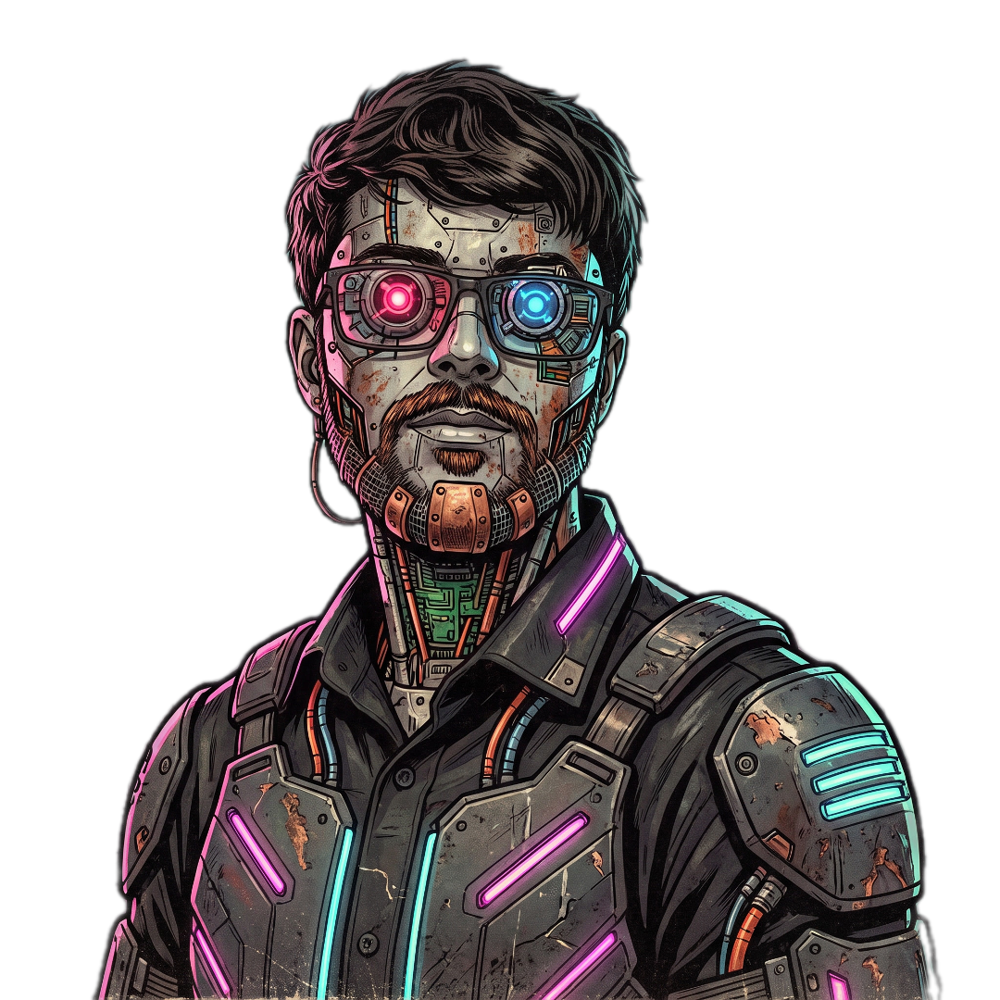

RAFAELAGUIAR
AI Automation Engineer / Creative AI for Direct Response
I turn copy into finished video — and build the pipelines that do it at scale.
▚bend the flow · click to reveal
None of this was made by hand.
Avatars, scenes and color grades generated by AI — output of the pipelines below.
Tasks I refused to do twice.
{"t":0.0,"ev":"click","sel":"#generate"}
{"t":2.6,"ev":"wait","for":"img.ready"}
{"t":9.1,"ev":"click","sel":".download"}
{"t":9.8,"ev":"save","as":"avatar_014.png"}
subtitle-audio-sync
38/40 matched · avg confidence 0.91
minimax-audio-downloader
Takes the whole batch in one click, named on save.
content-pipeline-architecture
End-to-end production with cost and time measured per step.
capcut-silence-trim
A shorter timeline without a single frame re-encoded.
browser-session-recorder
1 recorded session → 1 Playwright script.
Three verbs. In that order.
Generate
AI video, voice, image and avatars that hold the copy's narrative. In batch, with measured cost per run.
Integrate
I wire the tools over APIs and orchestrate them in self-hosted n8n. Retry and provider fallback are part of the flow — nobody moves files by hand.
Build
When the tool doesn't exist, I write it. CLI, extension, API — and the operator panel that runs it all.
Every decision has an alternative I didn't take.
A choice only means something next to what it cost.
From the edit bay to the assembly line.
I produce AI creatives for international Direct Response VSLs and ads — and I automate the process that generates them. At work that means new generation workflows and the internal tools the team uses; on my own it became a full production pipeline in Python and n8n that takes a topic all the way to a published video. I don't just operate the tools — I build the systems around them, because I know the funnel they feed: what a hook has to do in the first three seconds, and why a creative wins or dies in testing. I started in a technical IT program, went through web design and architecture, and arrived here from the audiovisual side: automating my own work until it turned into engineering.
Few people who write production code understand a Direct Response funnel from the inside. Few people who understand the funnel write code. I do both.
Senior AI Creator
- Turn the Copy team's briefing into AI video, voice, image and avatars for VSLs and ads.
- Design new generation workflows and automate the manual step that blocks the team.
- Built internal tools: a Chrome extension, CLIs and scripts that ended one-by-one downloading and file naming.
An automated channel, from topic to published video
- A personal project, and where I actually build: ~4k lines of Python take a topic to a finished video.
- 6+ generation APIs in a single flow, orchestrated in self-hosted n8n, with Python workers and my own FastAPI operator panel.
- A ~US$1 target cost per finished video, held up by provider fallback, disk cache and per-step cost and time telemetry.
VSL, ads & creative editor
- VSL and performance creative editing for the international market, inside campaign guidelines and deadlines.
- First automations: asset naming and organization, batch generation, bulk download.
Technical IT program, web design and architecture
- The technical base came from the program; the eye for composition and space came from architecture and web design.
Learned to code by building what I needed
- LLM-assisted development with versioned context, task decomposition and review of the output — not pasting chat answers.